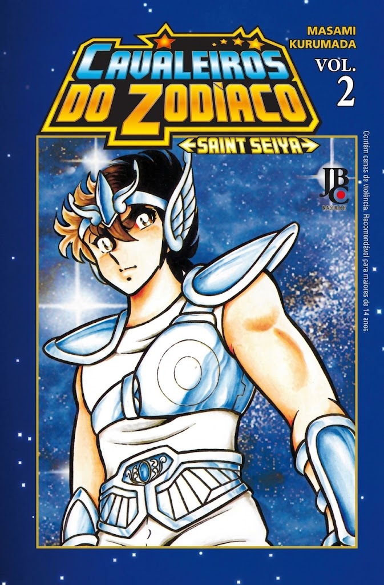
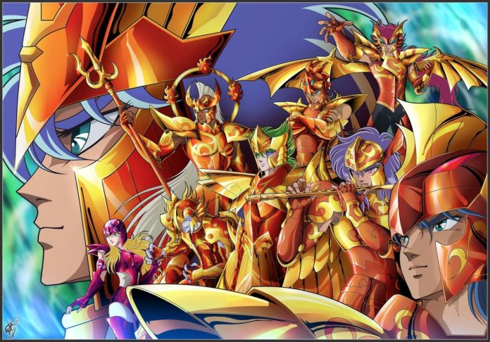

O mangá original de Saint Seiya foi criado por Masami Kurumada e publicado semanalmente no Japão na famosa revista Weekly Shōnen Jump da editora Shueisha, entre dezembro de 1985 e novembro de 1990. Os capítulos foram posteriormente compilados em 28 volumes no formato tankōbon.
| Autor e Ilustrador: | Masami Kurumada |
| Revista de Publicação: | Weekly Shōnen Jump |
| Editora Japonesa: | Shueisha |
| Período de Lançamento: | 1985 – 1990 |
| Volumes Clássicos: | 28 Volumes (Tankōbon) / 15 Volumes (Kanzenban) |

O universo da série expandiu-se enormemente com novas histórias em quadrinhos produzidas pelo próprio autor e por outros desenhistas renomados:
| Título do Mangá | Autor / Arte | Descrição |
|---|---|---|
| Saint Seiya: Next Dimension | Masami Kurumada | A continuação oficial e canônica da história, abordando a viagem no tempo de Saori e Shun para a Guerra Santa do século XVIII. |
| Saint Seiya: The Lost Canvas | Shiori Teshirogi | Conta a lendária Guerra Santa anterior contra Hades, focando na amizade entre Tenma de Pégaso, Alone e Sasha. |
| Saint Seiya: Episode.G | Megumu Okada | Destaca os Cavaleiros de Ouro em uma grande batalha contra os Titãs do mito antigo. |
| Saintia Shō | Chimaki Kuori | Foca nas Saintias, a guarda de elite e damas de companhia secretas da deusa Atena. |

© Todos os direitos reservados - Miguel Oliveira